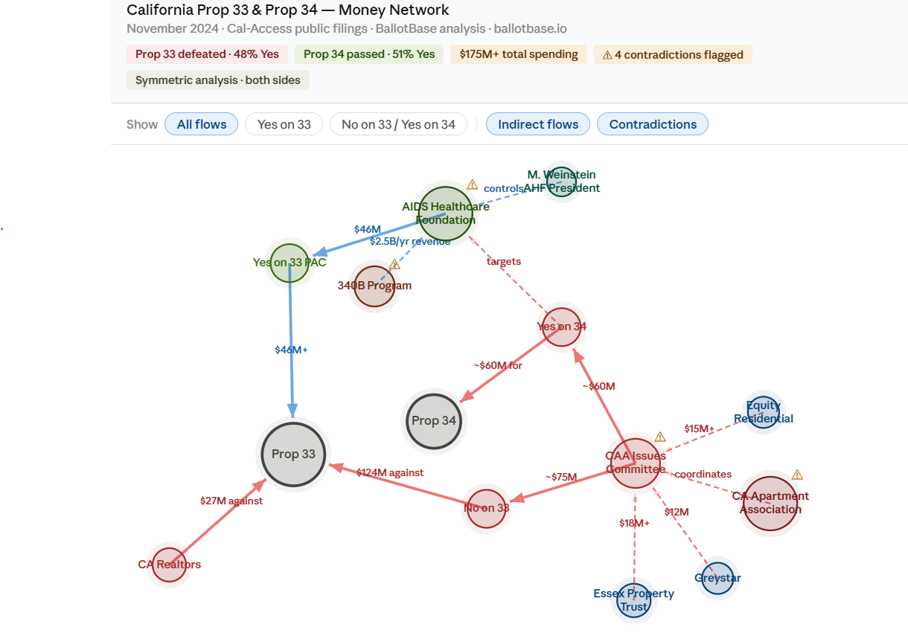

There is a moment in every major policy fight — before the first ad runs, before the opposition submits its arguments, before most voters have heard of the measure — when the financial infrastructure locks into place. Donors write checks. Trade associations move funds. Committees file with the secretary of state.
By the time the public conversation starts, the financial battle is already weeks or months old.
This is not a conspiracy. It is how large-scale policy fights work. The organizations with the resources to mobilize early do. The ones without those resources — the tenant coalitions, the faith communities, the neighborhood groups with volunteer signature gatherers — often do not see it coming until the money is already deployed against them.
California's rent control fights over the past six years offer a clear illustration of how this plays out. They also point toward what changes when the financial infrastructure becomes visible before the campaign begins.
The architecture of a $220 million fight
In November 2024, California voters defeated Proposition 33, a measure that would have repealed the Costa-Hawkins Rental Housing Act and allowed cities to expand rent control, for the third consecutive time since 2018. On the same ballot, voters narrowly passed Proposition 34, a measure requiring certain healthcare nonprofits to spend 98% of their federal drug discount revenues on direct patient care.
The two measures combined drew more than $220 million in total spending — more than half of all contributions to California's ten statewide ballot measures that cycle. [1] Prop 33 alone attracted $175 million in investment, the most of any single measure. [2]
Most of that money came from two directions.
The AIDS Healthcare Foundation, a Los Angeles nonprofit generating roughly $2.5 billion annually through the federal 340B drug discount program, contributed approximately $46 million to the Yes on 33 campaign and nearly $65 million across both measures combined. [3] This was their third consecutive attempt at Costa-Hawkins repeal, following similar measures in 2018 and 2020. [4]
The California Apartment Association organized the opposition through a single issues committee that raised $135.8 million from corporate landlords, then distributed those funds to two simultaneous campaigns: one opposing Prop 33 on the merits, one targeting AHF's ability to fund future campaigns through Prop 34. The Yes on 33 campaign was outspent by more than 2 to 1. [5]
Proposition 34 was written to apply to exactly one organization in California without naming it. According to CalMatters, only one entity in the state fit the measure's specific criteria: AHF. [6] Multiple editorial boards called it a revenge initiative. It passed by two points.

What most coverage of this fight missed was the sequence. The money did not appear when the campaigns launched. It was positioned months earlier, through committee structures and contribution patterns that are visible in Cal-Access filings — if you know where to look and when to look.
What financial transparency actually changes
The standard argument for campaign finance transparency is accountability. Voters deserve to know who is funding the campaigns trying to influence them. That is true, but it is also reactive. By the time voters see the disclosures, the financial architecture is already built.
The more actionable argument for financial transparency is strategic. If you can see the money moving before the campaign fully mobilizes, you can prepare.
For a tenant advocacy coalition running on volunteer energy and small donations, knowing in March that a well-funded opposition is already positioning against their November measure is different from finding out in September when the television ads start. It changes the organizing calculus. It changes the coalition-building timeline. It changes what you ask your larger allies to do and when.
For a lobbying firm advising a client on a state legislative priority, understanding which committee members are receiving money from which industries — and whether that pattern contradicts their stated positions — is a different kind of intelligence than tracking bill status. Status tells you what happened. Financial patterns tell you what is likely to happen and who is likely to make it happen.
This is the core premise behind following the money in policy fights: the financial record is more predictive than the public record. What organizations and individuals do with their money tends to reveal their actual priorities more clearly than what they say about them.
What about voters?
For advocates and lobbyists, financial intelligence is primarily strategic. For voters, it serves a different purpose: context.
Most ballot measures are written in language that tells you very little about whose interests they actually serve. Prop 33 was described as a rent control expansion. Prop 34 was described as a healthcare spending requirement. Neither description gave voters any indication that they were voting on a multi-year financial war between an AIDS nonprofit and a landlord trade association.
The money tells that story clearly. When the majority of the No on 33 funding came from corporate landlords, and the Yes on 33 campaign was funded almost entirely by a single nonprofit generating billions through federal drug discounts, voters had access to a much richer picture of the fight than the ballot language provided. Whether that context changes how a voter decides is up to them. But it is context the ballot summary does not give you.
Following the money does not tell voters how to vote. It tells them who wants them to vote a particular way, and what those funders stand to gain or lose. That is information voters are entitled to have, and it is sitting in public filings that most people never read.
The Redwood City question
Two months ago, Faith in Action Bay Area submitted over 7,300 signatures to place the Fair and Affordable Housing Ordinance on the November 2026 ballot in Redwood City. The measure would cap rent increases at 5% or 60% of CPI, whichever is lower, and extend significant tenant protections to buildings built before 1995. On June 8, the Redwood City City Council deferred action pending a supplemental analysis. The California Apartment Association appeared at City Hall and pushed for the delay. [7]
The measure has not yet been formally placed on the November ballot. Major campaign finance filings have not yet appeared. The same trade association that organized $135.8 million in opposition spending against Prop 33 statewide is actively engaged in a local fight covering roughly 7,000 apartments.
The question is not whether the financial infrastructure will mobilize. The pattern from 2018, 2020, and 2024 gives a reasonable basis for expecting it will. The question is when the money starts moving and whether the advocates on the other side will see it in time to respond.
This is precisely the kind of fight where financial visibility matters most. Statewide campaigns have the resources and staff to track opposition spending as it develops. Local initiatives run by volunteer coalitions often do not. The asymmetry is not just financial. It is informational.
What smaller players actually need
The conventional wisdom is that smaller advocacy organizations lose policy fights because they are outspent. That is partly true. But it is also true that they frequently lose because they are outmaneuvered — because the opposition understands the financial landscape earlier and can allocate resources accordingly.
A faith coalition that knows in July that corporate landlord money is beginning to flow into opposition committees can make different decisions than one that finds out in October. It can accelerate fundraising, reach out to potential large donors earlier, adjust its earned media strategy, and prepare its coalition partners for what is coming.
This is not about matching the opposition dollar for dollar. It is about not being caught by surprise.
The same logic applies to policy advocates working on legislation. A bill introduced into a committee whose members have significant financial relationships with the industry the bill regulates faces different odds than it would appear to on paper. Those financial relationships are in the public record. They are rarely analyzed in the context of the specific legislation being tracked.
When the money funding a legislator's campaign comes primarily from the industry they oversee, that is not automatically disqualifying. Legislators take money from many sources, and donor motivations cannot be inferred from contributions alone. But it is relevant context for anyone trying to understand why a bill moves or stalls, and for anyone trying to build a strategy around getting it across the finish line.
Transparency as infrastructure
The argument here is not that money is corrupting politics, though reasonable people hold that view. The argument is narrower: financial data is analytically useful and currently underutilized, particularly by the organizations that most need it.
The large players in any policy fight already have the staff and resources to track financial flows. They are not the ones who need better tools. The organizations that need better tools are the ones working on smaller budgets, with less institutional knowledge, trying to move policy in a system where the financial infrastructure is stacked against them.
Transparency does not level the playing field by itself. But it reduces the informational advantage that well-resourced organizations currently hold. When financial patterns are visible earlier — when the money moving into opposition committees is surfaced before the campaign fully launches — smaller organizations can make better strategic decisions with the resources they have.
That is what following the money is actually for. Not exposure. Not accountability in the abstract. Strategic preparation.
The Redwood City fight will play out over the next several months. The financial data will become visible in Cal-Access as committees file. Whether the advocates who need that information will see it in time to act on it is a different question.
It should not be.
How BallotBase fits into this work
BallotBase pulls from public FEC and Cal-Access filings and surfaces the financial patterns that matter: who is funding which campaigns, how money moves through committee structures before it reaches its final destination, and where observed donor behavior contradicts an organization's stated positions. The same analysis runs on all sides of a fight, with the same sourcing standards applied throughout.
For advocacy organizations tracking a ballot measure, BallotBase surfaces the financial infrastructure forming around it before the campaign launches publicly. For policy advocates working a bill through committee, it maps the financial relationships between industry donors and the legislators who will decide the bill's fate. For voters who want to understand what they are actually voting on, it puts the money story in plain language next to the ballot language.
The Redwood City fight is one example. There are hundreds of ballot measures and thousands of bills moving through California and federal processes at any given time. The financial data behind all of them is public. Most of it goes unread.
If you are working on a policy initiative, a ballot measure, or a legislative campaign and want to understand the financial landscape before the opposition does, that is the work BallotBase is built for.
Sources
[1] CalMatters / LA Public Press, October 2024. "More than $220 million has been funneled into California's competing ballot measures, Prop. 33 and Prop. 34." lapublicpress.org
[2] CalMatters Voter Guide 2024. "A total of $175 million has been invested in this ballot measure." calmatters-voter-guide-2024.netlify.app
[3] CalMatters, October 29, 2024. "The foundation's donations total nearly $65 million this election." calmatters.org
[4] CalMatters, November 2024. "The initiative marks the third time in recent years that tenant advocates have tried and failed to expand cities' ability to enact rent control." calmatters.org
[5] CalMatters, November 2024. "Advocates with the Yes on 33 campaign, who were outspent by a margin of more than 2 to 1..." calmatters.org
[6] LA Public Press, October 2024. "There is only one entity that fits that description: AHF." lapublicpress.org
[7] Redwood City council meeting coverage, June 8, 2026. Redwood City Pulse / SM Daily Journal.
Data referenced in this post is sourced from California Cal-Access public filings and public reporting. Pattern analysis reflects observations from financial data; no causal relationship between donor decisions and policy positions is asserted. Symmetric analytical treatment applied to all parties cited.